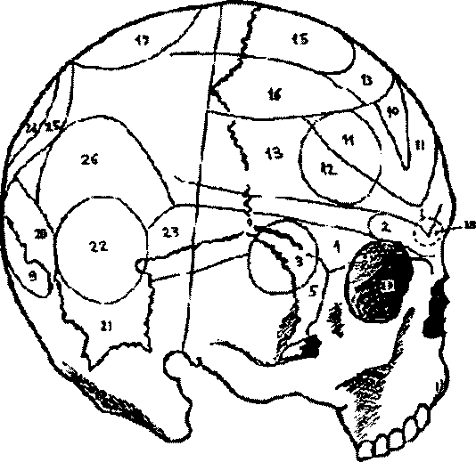

13. Organizatörlük yeteneği (9,10-12,14) iyi kalplilik 14. Dini konulara ilgi
15. Taklit, imitasyon hissi (14 ile birleşiyor)
__________________________________________________________________
© WWW.MAXIMUMBILGI.COM

Araştırma Serisi No.13 Yüz Okuma Sanatı
¯¯¯¯¯¯¯¯¯¯¯¯¯¯¯¯¯¯¯¯¯¯¯¯¯¯¯¯¯¯¯¯¯¯ ¯¯¯¯¯¯¯¯¯¯¯¯¯¯¯¯¯¯¯¯¯¯¯¯¯¯¯¯¯¯¯¯¯¯
11
◄ Şekil 4. İnsan kafatasının
yandan görünümü
1. Eğitilme yeteneği
2. Yer ve yön hissi
3. Renk hissi